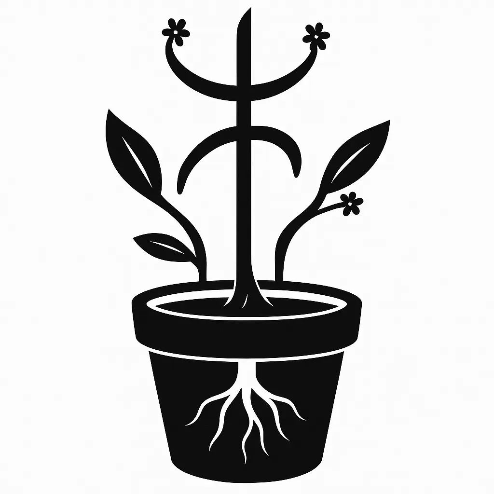
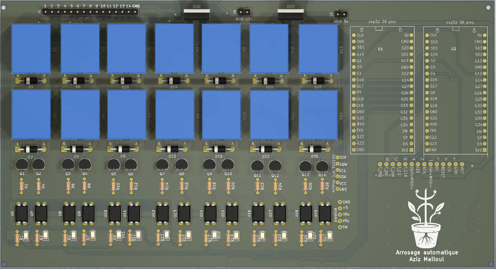
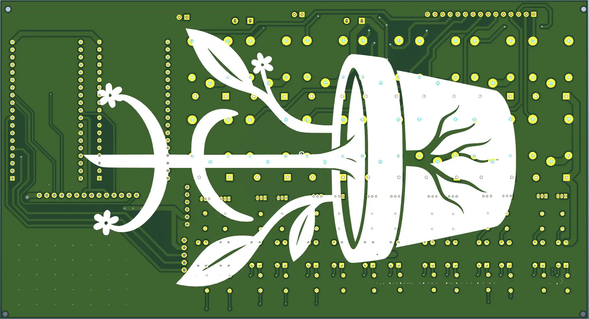
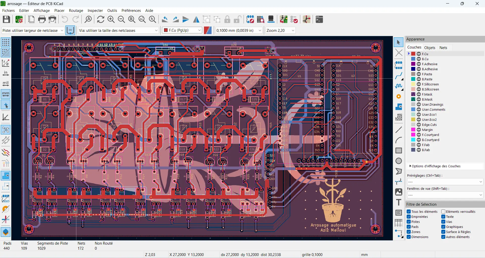
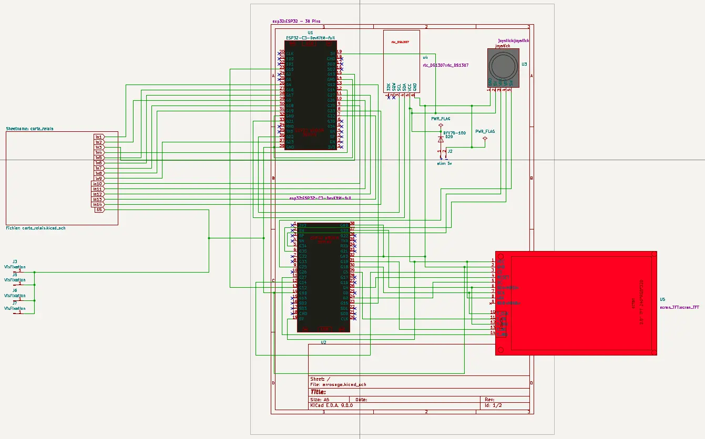
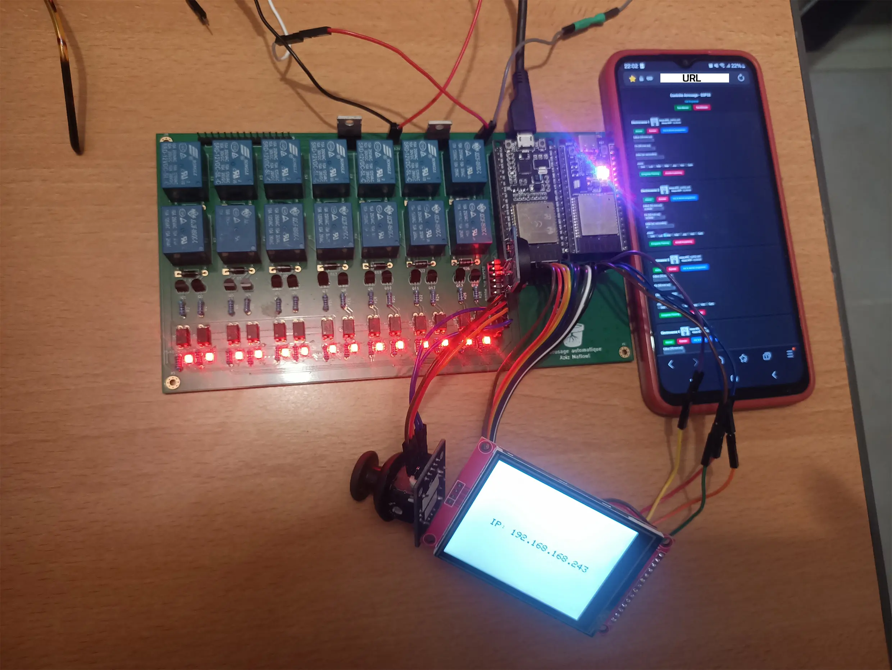
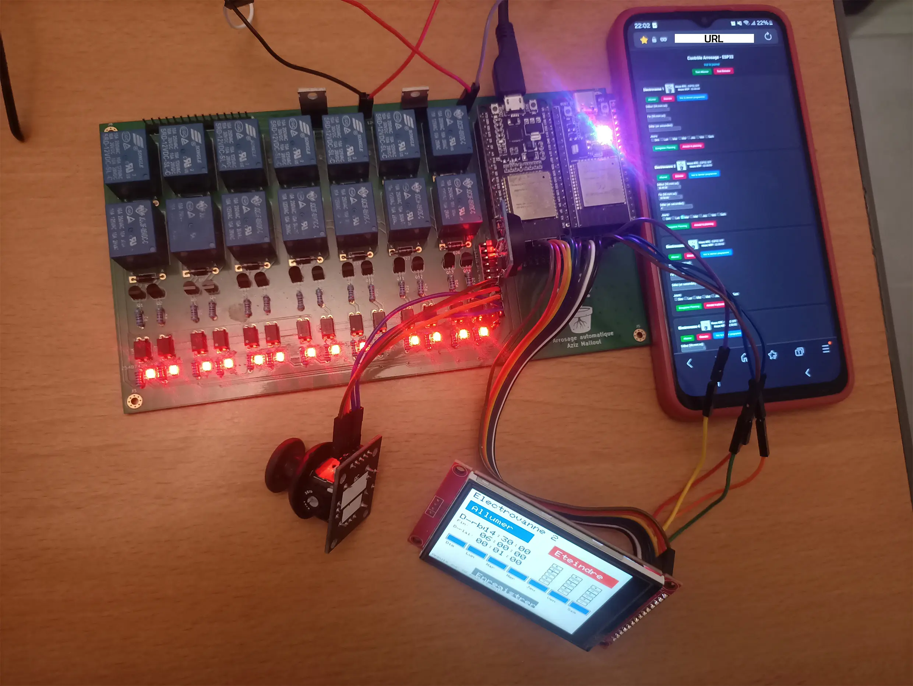
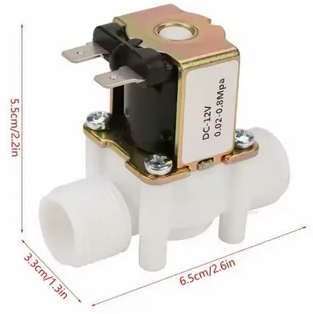

Aziz Malloul
🌿 Projet d’Arrosage Automatique Intelligent – Double ESP32 
Objectif : système multizone autonome et connecté, avec U2 (ESP32-A) pour l’interface locale
TFT tactile + joystick & configuration Wi-Fi, et U1 (ESP32-B) pour piloter
jusqu’à 14 électrovannes, servir une interface Web sécurisée, synchroniser l’heure
NTP + RTC DS3231, exécuter les plannings et journaliser vers Google Sheets.
Architecture générale – Double ESP32 (38 pins)
| Module | Rôle | Détails |
|---|---|---|
| ESP32-A (U2) – Interface | Affichage & saisie locale | Écran TFT SPI ILI9341 240×320 + tactile XPT2046, joystick (X/Y/SW), portail AP “ESP32-Config” (192.168.4.1) pour saisir SSID/PASS, envoi à U1 via UART, affichage des programmes/états reçus d’U1. |
| ESP32-B (U1) – Arrosage & Web | Pilotage / réseau | Serveur HTTP local sécurisé, 14 électrovannes, RTC DS3231 (I2C), NTP, FreeRTOS, persistance,
journalisation Google Sheets, lecture périodique de command.txt et synchro UART avec U2. |
ESP32-B : Web sécurisé, 14 électrovannes, RTC & NTP
- Wi-Fi : connexion au réseau domestique (SSID/PASS reçus d’U2). Interface web locale (port 80) protégée.
- RTC DS3231 + NTP : UTC+2 ; resynchronisation toutes les 24 h ; fonctionnement offline via RTC.
- Plannings par vanne : début/fin, jours (L→D), cycles ON/OFF, manuel/auto.
- Journalisation : envoi POST vers Google Apps Script → Google Sheets (vanne, heure, origine).
Affectation des broches – ESP32-B
| Fonction | GPIO | Notes |
|---|---|---|
| Électrovannes (14 sorties) | 4,5,13,14,16,17,18,19,23,25,26,27,32,33 | Bjt/relais (alims séparées, GND commun) |
| I2C – RTC DS3231 | 21 (SDA), 22 (SCL) | Horloge temps réel |
| UART inter-ESP | 12 (RX), 15 (TX) | Liaison matérielle avec U2 |
ESP32-A : Interface locale TFT tactile + joystick
- TFT ILI9341 (SPI) + tactile XPT2046 (SPI partagé).
- Joystick : X/Y analogiques + bouton SW.
- Pages : sélection vanne, plages horaires, jours, cycles ON/OFF, ON/OFF/Enregistrer, IP locale de U1.
- Données reçues d’U1 via UART : programmes, états, heure RTC/NTP, logs.
Broches utilisées – ESP32-A
| Sous-système | GPIO | Rôle |
|---|---|---|
| TFT ILI9341 | 14 (CS), 4 (RESET), 2 (DC), 23 (MOSI), 18 (SCK) | Affichage SPI 240×320 |
| Tactile XPT2046 | 5 (T_CS), 18 (T_CLK), 23 (T_DIN), 19 (T_DO), 27 (T_IRQ) | SPI partagé |
| Joystick | 34 (X), 35 (Y), 25 (SW) | Navigation + sélection |
| UART vers U1 | 15 (TX), 12 (RX) | Synchronisation / commandes |
Gestion des électrovannes & modes
- Jusqu’à 14 vannes indépendantes.
- Programmation : début/fin, délai, jours actifs, ON/OFF, manuel/auto.
- Commandes :
- Manuel : interface web sécurisée ou interface locale.
- Automatique : horaires persistants + lecture périodique de
command.txt+ synchro UART.
Multitâche FreeRTOS (ESP32-B)
| Tâche | Description |
|---|---|
ArrosageTask | Vérifie chaque seconde horaires & cycles ON/OFF, applique timeouts. |
TimeDisplayTask | Affiche l’heure RTC/NTP en continu (console / web). |
Stockage & persistance (conservation des données après redémarrage)
- ESP32-B / Preferences : paramètres par vanne (début/fin, cycle, jours, état).
- ESP32-A / EEPROM : dernier planning sélectionné côté interface.
Commandes distantes via Internet
- ON1 → : Allume la vanne 1 immédiatement.
- OFF1 → : Éteint la vanne 1 immédiatement.
- SET2;06:00:00;06:10:00;60;1,3,5 → : Programme la vanne 2 (6h-6h10, cycle 60 s, jours Lundi, Mercredi, Vendredi).
Journalisation vers Google Sheets
- Google Apps Script + Google Sheets.
- Action, vanne, horodatage, origine (Web, tactile, auto, distante).
- Page journal.html (alwaysdata) pour visualiser les logs.
Galerie – Rendus & PCB







